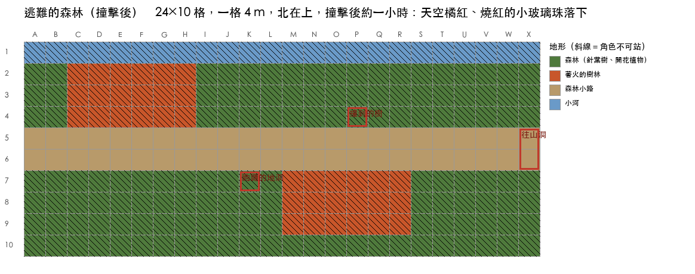
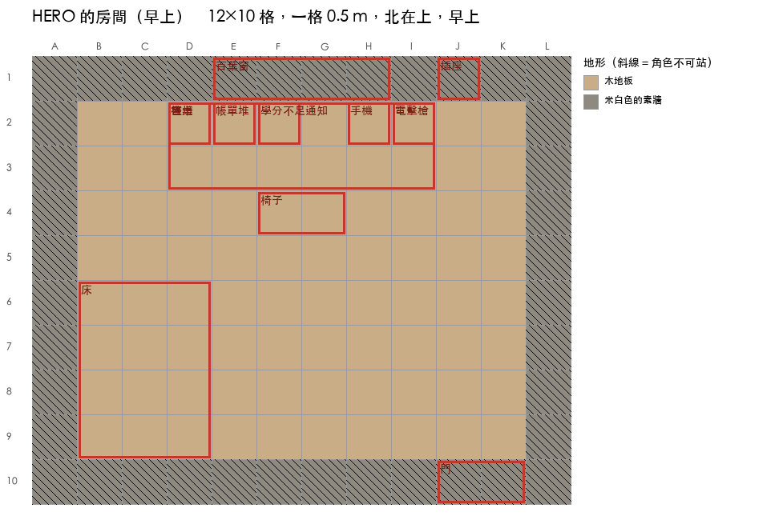
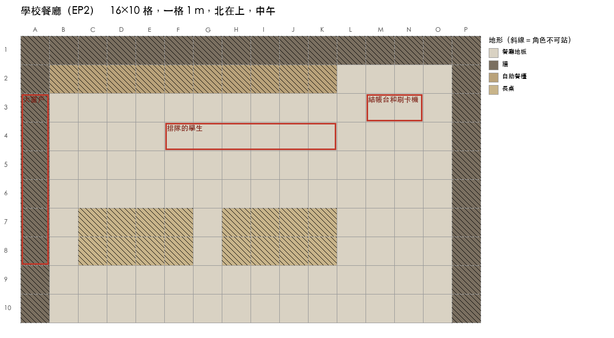

EP2 分鏡清單＋分幕＋地圖
第 10 步（分鏡清單＋旁白，定稿點）、第 11 步（分幕）、第 12 步（場景地圖）的檢查點。來源：episodes/002_chicxulub/script_v2.md、episodes/002_chicxulub/scenes_v1.json。綠底＝科普格、黃底＝搞笑格。地圖是 Claude 初稿，你可以用地圖編輯器改。畫面上都不能有字（Flow 規定）。
總覽
84 格・12 幕・約 6.8 分鐘 科普格佔 53%（用秒數算；故事頁用字數算是 52%）
| 幕 | 地點 | 格數 | 秒 | 科普 | 地圖 |
|---|---|---|---|---|---|
| 幕 1 | 燃燒的森林・撞擊後 | 5 | 14 | 24% | ep2_escape |
| 幕 2 | HERO 的房間・早上 | 1 | 8 | 0% | home_morning |
| 幕 3 | 學校餐廳・中午 | 3 | 17 | 0% | ep2_cafeteria |
| 幕 4 | 校園・博士的小屋外 | 1 | 3 | 0% | campus_hut |
| 幕 5 | 博士實驗室・出發前 | 14 | 82 | 64% | lab |
| 幕 6 | 降落空地・撞擊前（三天後） | 3 | 20 | 0% | arrive |
| 幕 7 | 高處土丘・撞擊前 | 11 | 53 | 61% | ep2_lookout |
| 幕 8 | 降落空地・撞擊後 | 13 | 65 | 60% | arrive |
| 幕 9 | 燃燒的森林・撞擊後約一小時 | 12 | 36 | 70% | ep2_escape |
| 幕 10 | 大山洞（虛構） | 7 | 24 | 12% | ep2_cave |
| 幕 11 | 你沒看到的後來（插圖、今天的地獄溪、博物館） | 10 | 67 | 92% | — |
| 幕 12 | 博士實驗室・回來後＋預告 | 4 | 23 | 0% | lab |
地圖總覽（第 12 步）
這一集用到的地圖。ep2_ 開頭的是 EP2 新畫的（Claude 初稿，你可以改）；其他沿用 EP1。





幕 1 燃燒的森林・撞擊後
冷開場：HERO 追著背著背包的石頭，天上落下燒紅的小玻璃珠，樹林著火；定格、倒帶。
地圖：ep2_escape（跟幕 8 同一張地圖、同一刻）
| 格 | 畫面 | 類型 | 景別 | 旁白 | 聲音 | 分類 | 知識點 | 秒 |
|---|---|---|---|---|---|---|---|---|
| S00-1 | 冒火的森林裡，HERO 拚命往前跑，前面是亂跑的石頭（甲龍） | 🖼 | 背後跟拍、遠景 | 你正在跑。 | 反應：HERO 喘氣；環境：火燒劈啪聲 | 劇情 | 1 | |
| S00-2 | 石頭的尾錘上勾著 HERO 的背包，一甩一甩 | 🔍 | 特寫 | 前面那隻甲龍，帶著你的背包。 | 音效：尾錘甩動的呼呼聲 | 搞笑 | 3 | |
| S00-3 | 天上落下一顆顆燒紅的小玻璃珠，樹林一處處燒起來，旁邊還有其他恐龍在逃 | 🖼 | 高角度、大遠景 | 天上掉下來的，是燒紅的小玻璃珠。 | 音效：小珠子落地的咻咻聲；環境：大火 | 科普 | #69 | 3 |
| S00-4 | HERO 跳過一根冒火的倒木，畫面定格、變灰 | 🖼 | 迎面、近景、定格 | 你一定很想問： 我只是回來拿個背包， 怎麼會變成這樣？ | 音效：唱片刮擦，然後全靜 | 劇情 | 5 | |
| S00-5 | 畫面快速倒帶，轉成黑畫面 | 🖼 | 倒帶效果 | — | 音效：倒帶聲 | 劇情 | 2 |
幕 2 HERO 的房間・早上
書桌：帳單、EP1 的收據。
地圖：home_morning（沿用 EP1）
| 格 | 畫面 | 類型 | 景別 | 旁白 | 聲音 | 分類 | 知識點 | 秒 |
|---|---|---|---|---|---|---|---|---|
| S01-1 | HERO 的書桌：一疊帳單，最上面是 EP1 博士給的收據（畫著壞掉的相機和電擊槍，沒有字） | 🔍 | 俯拍特寫 | 你的書桌上，帳單又多了幾張。 還有一張博士給的收據，上面畫著一台壞掉的相機。 | 環境：時鐘滴答 | 搞笑 | 8 |
幕 3 學校餐廳・中午
要刷學生證才發現背包留在白堊紀。
地圖：ep2_cafeteria（新地圖；S01-3 是 EP1 的閃回）
| 格 | 畫面 | 類型 | 景別 | 旁白 | 聲音 | 分類 | 知識點 | 秒 |
|---|---|---|---|---|---|---|---|---|
| S01-2 | 學校餐廳結帳台前，HERO 拿著餐盤，另一手翻遍口袋 | 🖼 | 中景 | 中午，你到學校餐廳排隊。 輪到你的時候，才發現學生證不見了。 | 反應：HERO〔嗯？〕；環境：餐廳人聲、餐盤碰撞 | 劇情 | 6 | |
| S01-3 | EP1 最後的畫面：空地上，背包躺在睡著的石頭旁邊 | ⏪ | 遠景（沿用 EP1 12-15） | （停）你想起來了。它在你的背包裡。 你的背包，還躺在三天前的白堊紀。 | 環境：石頭的鼾聲 | 劇情 | 7 | |
| S01-4 | 刷卡機亮紅燈（只有紅燈和叉叉圖示），HERO 把餐盤放回去 | 🖼 | 近景 | 沒有學生證，你連學校餐廳的飯都吃不到。 | 音效：刷卡失敗的嗶嗶聲；反應：HERO〔唉……〕 | 搞笑 | 4 |
幕 4 校園・博士的小屋外
HERO 走向博士的小屋。
地圖：campus_hut（沿用 EP1）
| 格 | 畫面 | 類型 | 景別 | 旁白 | 聲音 | 分類 | 知識點 | 秒 |
|---|---|---|---|---|---|---|---|---|
| S01-5 | 校園裡，校務大樓旁那間老舊的兩層木造小屋；HERO 走向門口 | 🖼 | 遠景 | 你只好去找博士，想借時光機。 | 環境：校園環境音、鳥叫 | 劇情 | 3 |
幕 5 博士實驗室・出發前
借時光機的條件；黑板上講小行星（名字、大小、方向、撞擊坑、範圍、一億倍）；生存指南塞進新袋子；出發。
地圖：lab（沿用 EP1（黑板在西牆））
| 格 | 畫面 | 類型 | 景別 | 旁白 | 聲音 | 分類 | 知識點 | 秒 |
|---|---|---|---|---|---|---|---|---|
| S01-6 | 實驗室裡，博士一聽，眼睛發亮 | 🖼 | 近景 | 博士一聽，眼睛都亮了。 | 反應：PROF〔喔！〕 | 搞笑 | 2 | |
| S01-7 | 博士一手把相機塞給 HERO，一手搖手指 | 🖼 | 中景 | 他說：可以啊，順便幫我拍一張照片。 （停） 不拍，就不借。 | 反應：PROF〔嘿嘿～〕 | 搞笑 | 5 | |
| S02-1 | 博士在黑板上用粉筆畫一顆拖著尾巴的星；HERO 在旁邊滑手機 | 🖼 | 中景 | 博士要你拍的，是天上的一顆「新星」。 | 音效：粉筆聲 | 劇情 | 3 | |
| S02-2 | 黑板特寫：那顆星被畫成一顆坑坑疤疤的大石頭 | 🔍 | 特寫 | 其實，它是一顆小行星， 叫做 Chicxulub，念作「希克蘇魯伯」。 | 音效：粉筆聲 | 科普 | #9 | 6 |
| S02-3 | 黑板：小行星旁邊畫一座聖母峰，小行星比山還高 | 🔍 | 特寫 | 它大概有十公里寬，比聖母峰還要高。 | 音效：粉筆聲 | 科普 | #101 | 3 |
| S02-4 | 黑板：北美洲和墨西哥的輪廓，小行星從右上角斜斜地飛向猶加敦半島 | 🔍 | 特寫 | 它會斜斜地，從東北邊衝下來， 撞在今天墨西哥的猶加敦半島。 | 音效：粉筆劃一道長線 | 科普 | #104 #9 | 6 |
| S02-5 | 黑板：撞擊點畫一個大圓，一半在陸地、一半在海裡，上面蓋著一層厚石頭，邊緣一圈小水井 | 🔍 | 特寫 | 撞出來的大坑，今天一半在陸地底下，一半在海底， 還被埋在一公里厚的石頭下面，站在上面根本看不出來。 只有坑的邊緣，排著一圈天然的水井。 | 音效：粉筆點點點 | 科普 | #112 #113 #114 | 13 |
| S02-6 | 博士從撞擊點往外一圈一圈畫（書上 p.13 爆炸範圍圖，手繪重畫，沒有字） | 🔍 | 特寫、慢慢拉遠 | 它撞下去的力量， 是人類做過最大的核彈的一億倍。 | 音效：粉筆畫圈聲 | 科普 | #8 | 5 |
| S02-7 | 同一張黑板，圈圈依序蓋到德州、紐約、阿根廷（剪輯時一圈一圈亮起來） | 🔍 | 特寫 | 如果今天撞在同一個地方， 德州的人會被炸死，紐約的人會被震聾， 連阿根廷的窗戶，都會被震碎。 | 音效：每一圈亮起一聲咚 | 科普 | #56 | 9 |
| S02-8 | HERO 頭都沒抬，繼續滑手機 | 🖼 | 近景 | 而你，只聽到兩個字：流星。 （停） 拍流星，這有什麼難的。 | 反應：HERO〔嗯嗯〕 | 搞笑 | 5 | |
| S02-9 | 博士把生存指南推到 HERO 面前，HERO 隨手塞進一個新袋子 | 🖼 | 中景 | 博士又推過來那本生存指南。 這一次，你有把它塞進袋子裡。 | 音效：書推過桌面的摩擦聲 | 劇情 | 6 | |
| S02-10 | HERO 把洋芋片、食物和水裝進那個袋子 | 🔍 | 俯拍特寫 | 你還帶了洋芋片、食物和水。 不是給你自己的。是要帶給一位老朋友。 | 音效：洋芋片袋的沙沙聲 | 劇情 | 6 | |
| S02-11 | 袋子裡只有洋芋片；旁邊浮出指南的一頁：一件外套和一大疊罐頭的圖示 | 🔍 | 俯拍特寫 | （停）書上說，要在這次撞擊後活下來， 你得帶保暖的衣服，和至少六年份的糧食。 你帶了一袋洋芋片。 | 音效：洋芋片袋輕輕一響 | 科普 | #88 | 10 |
| S02-12 | 博士拉下拉桿，時光機亮起來，HERO 被吸進隧道 | 🖼 | 遠景 | — | 音效：拉桿聲、隧道開啟聲；反應：HERO〔呀——！〕 | 劇情 | 2 |
幕 6 降落空地・撞擊前（三天後）
石頭還在原地睡覺，HERO 餵洋芋片，把背包放回石頭身邊。
地圖：arrive（沿用 EP1；甲龍石頭的位置 D27–F28 跟 EP1 一樣）
| 格 | 畫面 | 類型 | 景別 | 旁白 | 聲音 | 分類 | 知識點 | 秒 |
|---|---|---|---|---|---|---|---|---|
| S03-1 | EP1 那片空地：石頭還在原地睡覺，背包就在牠旁邊 | 🖼 | 遠景 | 時間，回到三天後的白堊紀。 同一片空地。 （停）三天沒見，石頭還是一顆石頭。 | 環境：蟲鳴、鳥叫；反應：石頭的鼾聲 | 搞笑 | 7 | |
| S03-2 | HERO 把洋芋片倒給石頭，石頭吃得很開心 | 🖼 | 中景 | 你把洋芋片倒給牠。 牠吃得很開心。這是牠這輩子吃到的第二包洋芋片。 | 音效：咀嚼聲；反應：石頭滿足的哼聲 | 搞笑 | 7 | |
| S03-3 | HERO 把新袋子塞進背包，把背包放回石頭身邊，只背著相機走開 | 🖼 | 中景 | 你把背包放在牠旁邊，只帶著相機出發。 反正，拍完就回來拿嘛。 | 環境：蟲鳴 | 劇情 | 6 |
幕 7 高處土丘・撞擊前
架相機；遠方山洞、矮暴龍打三角龍；那顆星越來越亮、劃過天空、撞上了。
地圖：ep2_lookout（新地圖）
| 格 | 畫面 | 類型 | 景別 | 旁白 | 聲音 | 分類 | 知識點 | 秒 |
|---|---|---|---|---|---|---|---|---|
| S04-1 | HERO 爬上附近一塊比較高的土丘，架好相機 | 🖼 | 遠景 | — | 音效：腳架喀一聲 | 劇情 | 2 | |
| S04-2 | 從高處看出去的全景；遠方有一個大山洞 | 🖼 | 過肩、大遠景 | 從這裡看出去，整片白堊紀都在眼前。 | 環境：風聲 | 劇情 | 3 | |
| S04-3 | 遠方，一隻矮暴龍繞著一隻三角龍跳，三角龍低頭用角頂 | 🖼 | 大遠景 | 遠遠的，一隻恐龍正在跟三角龍打架。 | 音效：遠遠的吼叫和撞擊聲 | 劇情 | 3 | |
| S04-4 | 矮暴龍近一點：像縮小版的暴龍，腿又細又長 | 🖼 | 長焦、中景 | 牠長得像暴龍，可是小了好幾號，腿又細又長。 牠不是小暴龍。牠叫矮暴龍，是另外一種恐龍， 只有暴龍的十分之一重，跑得比暴龍快多了。 | 音效：矮暴龍的嘶吼 | 科普 | #125 #128 | 13 |
| S04-5 | HERO 舉起相機對準牠們，又放下，抬頭看天 | 🖼 | 近景 | 你舉起相機。 （停）不對，博士要的是天上那一顆。 | 反應：HERO〔喔對〕 | 搞笑 | 5 | |
| S04-6 | 天上一個比其他星星亮很多的光點 | 🖼 | 中景 | 三天前，這顆星跟其他星星沒什麼兩樣。 你在逃命的時候，根本沒注意到它。 | 環境：風聲 | 科普 | #7 | 7 |
| S04-7 | 天空：那顆星越來越亮，亮過旁邊的月亮 | 🖼 | 大遠景 | 可是它越來越亮。 比所有的星星亮，比行星亮，比月亮還亮。 | 音效：低沉的嗡鳴慢慢變大 | 科普 | #7 | 5 |
| S04-8 | HERO 從相機後面抬起頭，皺眉 | 🖼 | 近景 | 你開始覺得，怪怪的。 這顆流星，怎麼這麼亮？ | 反應：HERO〔嗯……？〕 | 劇情 | 4 | |
| S04-9 | 它比太陽還亮，幾秒鐘劃過整片天空；HERO 按下快門 | 🖼 | 背後、遠景 | 最後，它比太陽還亮。 然後，它用幾秒鐘的時間，劃過了整片天空。 你按下了快門。 | 音效：快門聲、呼嘯聲 | 科普 | #7 #38 | 7 |
| S04-10 | 它消失在南方的地平線，接著天邊一陣亮光 | 🖼 | 背後、大遠景 | 欸。 | 音效：全靜，然後很遠的悶響 | 劇情 | 0 | |
| S04-11 | HERO 張著嘴，呆住 | 🖼 | 近景 | （停）它沒有飛過去。 它撞上了。 | 反應：HERO 倒抽一口氣 | 劇情 | 3 |
幕 8 降落空地・撞擊後
跑回空地翻生存指南；關我屁事；石頭鑽進背包；地震，石頭帶著背包跑了。
地圖：arrive（同幕 6 的地圖，時間改成撞擊後（天邊亮光、起風））
| 格 | 畫面 | 類型 | 景別 | 旁白 | 聲音 | 分類 | 知識點 | 秒 |
|---|---|---|---|---|---|---|---|---|
| S05-1 | HERO 從土丘衝下來，跑回空地，從背包裡翻出生存指南 | 🖼 | 中景 | 你這輩子，第一次那麼想看生存指南。 你跑回去，從背包裡翻出來。 | 音效：快速翻頁聲；反應：HERO 喘氣 | 劇情 | 6 | |
| S05-2 | 指南翻開的那一頁：一顆拖著火尾的大石頭撞地球，旁邊一隻恐龍的骨頭 | 🔍 | 特寫 | 翻開一看，你才知道， 這一顆，就是讓恐龍滅絕的那一顆。 | — | 科普 | #11 | 5 |
| S05-3 | 指南內頁：世界地圖（書上 p.20 的圖，手繪重畫）。撞擊點骷髏、北美洲火焰、大部分地方雪花、很遠的熱帶島嶼一個太陽和箭頭（沒有字） | 🔍 | 特寫 | 你在的地方，畫著一團火。 | — | 科普 | #80 | 2 |
| S05-4 | 指南下一頁：一排圖示，第一個是聲波 | 🔍 | 特寫 | 指南上寫著，接下來會發生的事。 第一，一聲很大的音爆。不管你在地球的哪裡，都聽得到。 | 音效：翻頁聲 | 科普 | #15 | 8 |
| S05-5 | 圖示：裂開的地面 | 🔍 | 特寫 | 第二，地震。在這裡，大概十幾分鐘後就會開始搖。 | — | 科普 | #57 | 4 |
| S05-6 | 圖示：天上落下燒紅的小玻璃珠 | 🔍 | 特寫 | 第三，一個小時之內，天上會掉下燒紅的小玻璃珠。 | — | 科普 | #69 | 5 |
| S05-7 | 圖示：森林起火，畫成一台烤箱 | 🔍 | 特寫 | 第四，森林會燒起來，熱得像一台開到最強火的烤箱。 | — | 科普 | #71 #72 | 5 |
| S05-8 | 圖示：水邊打來大浪 | 🔍 | 特寫 | 第五，不要待在水邊，會有大浪。 | — | 科普 | #60 | 3 |
| S05-9 | 圖示：一座山和一個山洞，箭頭往深處指 | 🔍 | 特寫 | 想活下來：快去高的地方，找一個山洞，越深越好。 | — | 科普 | #16 #70 | 4 |
| S06-1 | HERO 闔上指南，看了看相機裡的照片，聳聳肩 | 🖼 | 近景 | 你想了一下。 （停）關我屁事。照片拍到了，可以回家了。 | 音效：闔書聲 | 搞笑 | 5 | |
| S06-2 | HERO 把指南塞回地上的背包，蹲下來要翻按鈕；石頭搶先把頭鑽進背包 | 🖼 | 中景 | 你把指南塞回背包，正要翻出那顆按鈕。 可是石頭還想吃洋芋片，牠把頭鑽進了你的背包。 | 音效：翻找聲；反應：石頭的鼻息 | 搞笑 | 8 | |
| S07-1 | 地面開始晃，小石頭在地上跳動 | 🖼 | 低角度、中景 | 這時候，地面開始搖了。 | 音效：低沉的隆隆聲 | 科普 | #57 | 2 |
| S07-2 | 石頭嚇得跳起來就跑，背包背帶勾在牠的尾錘上，跟著被帶走 | 🖼 | 中景 | 石頭嚇了一大跳，轉身就跑。 （停）帶著你的背包。 還有，你的回家按鈕。 | 反應：石頭驚叫、HERO〔欸欸欸！〕 | 搞笑 | 7 |
幕 9 燃燒的森林・撞擊後約一小時
追石頭；玻璃珠雨、森林起火；恐龍們在逃；鼩鼱鑽進地洞。
地圖：ep2_escape（新地圖；S07-4 是 EP1 閃回）
| 格 | 畫面 | 類型 | 景別 | 旁白 | 聲音 | 分類 | 知識點 | 秒 |
|---|---|---|---|---|---|---|---|---|
| S07-3 | HERO 在後面追，石頭在前面 | 🖼 | 背後跟拍、中景 | 你只好追。 | 音效：腳步聲、石頭沉重的腳步 | 劇情 | 1 | |
| S07-4 | EP1 行前教育：博士一手舉大恐龍、一手舉小恐龍 | ⏪ | 近景（沿用 EP1 04-06） | 博士上課說過，越大隻的，跑得越慢。 | 音效：塑膠玩具輕碰聲 | 科普 | EP1-5 | 3 |
| S07-5 | HERO 越落越遠，扶著膝蓋喘，石頭在遠處越跑越小 | 🖼 | 遠景 | （停）你連一隻甲龍都追不上。 | 反應：HERO 大口喘氣 | 搞笑 | 3 | |
| S08-1 | 天上開始落下燒紅的小玻璃珠，打在地上冒煙 | 🖼 | 遠景 | 天上，開始下起燒紅的小玻璃珠。 | 音效：小珠子落地的咻咻聲、嘶嘶冒煙 | 科普 | #69 | 3 |
| S08-2 | 樹林一片一片燒起來，天空一片橘紅，HERO 從火堆之間穿過去 | 🖼 | 遠景 | 它們跟空氣一摩擦，把天空烤得熱烘烘的。 樹林，一片一片燒了起來。 | 環境：大火劈啪聲 | 科普 | #71 #72 | 6 |
| S08-3 | 一群鴨嘴龍從 HERO 旁邊衝過去 | 🖼 | 遠景 | 所有的恐龍都在逃。 | 音效：大群腳步聲；反應：鴨嘴龍的叫聲 | 劇情 | 2 | |
| S08-4 | 一隻三角龍從火裡衝出來 | 🖼 | 中景 | — | 音效：沉重的腳步聲 | 劇情 | 2 | |
| S08-5 | 腫頭龍低著頭逃，又一頭撞上一棵樹 | 🖼 | 中景 | — | 音效：咚一聲悶響 | 搞笑 | 2 | |
| S08-6 | 似鴕龍從 HERO 身邊跑過，嘴裡還叼著 HERO 的帽子 | 🖼 | 斜角跟拍、中景 | 喔，那是你的帽子。 | 音效：急促腳步聲 | 搞笑 | 2 | |
| S08-7 | 路邊一隻鼩鼱一溜煙鑽進地洞 | 🖼 | 低角度、特寫 | 大傢伙拚命跑。 小傢伙一鑽，就沒事了。 | 音效：吱一聲、鑽土的沙沙聲 | 科普 | #74 | 3 |
| S08-8 | 地洞剖面：鼩鼱縮在洞裡，身上有毛，嘴裡叼著一隻蟲 | 🔍 | 剖面、特寫 | 牠吃蟲子，會鑽進洞裡躲熱， 身上還有一層毛，之後再冷都不怕。 | 環境：外面大火的聲音變悶 | 科普 | #34 | 6 |
| S08-9 | 鼩鼱從洞口探頭，看著 HERO 跑過去 | 🔍 | 特寫 | （停）這個小傢伙，是你的祖先。 | 反應：鼩鼱吱吱 | 科普 | #33 | 3 |
幕 10 大山洞（虛構）
石頭跑到山洞；HERO 拉著牠一起進去；說再見、按鈕要拍一下、回家。
地圖：ep2_cave（新地圖）
| 格 | 畫面 | 類型 | 景別 | 旁白 | 聲音 | 分類 | 知識點 | 秒 |
|---|---|---|---|---|---|---|---|---|
| S09-1 | 石頭亂跑，前面出現一個大山洞，就是 HERO 在高處看到的那一個；已有恐龍往裡走 | 🖼 | 遠景 | 石頭一路亂跑，竟然跑到了你在高處看到的那個大山洞。 | 環境：大火、風聲 | 劇情 | 5 | |
| S09-2 | HERO 追上石頭，一手抓住背包的背帶，停了一下 | 🖼 | 近景 | 你終於抓到了背包。 你本來，只是想拿回背包。 | 反應：HERO 喘氣 | 劇情 | 4 | |
| S09-3 | HERO 拉著石頭，跟著其他恐龍走進山洞，背後是一整片大火 | 🖼 | 背後、中景 | 可是你拉著牠，一起走了進去。 | 環境：大火聲漸遠 | 科普 | #70 | 3 |
| S09-4 | 山洞深處黑漆漆，HERO 往裡面看 | 🖼 | 背後、遠景 | 這個洞，好深。 （停）能通到地心嗎？ | 音效：回音 | 劇情 | 3 | |
| S09-5 | HERO 摸摸石頭的頭，揮手說再見，按下按鈕 | 🖼 | 中景 | 你跟石頭說再見，按下按鈕。 | 反應：石頭輕輕哼一聲 | 劇情 | 3 | |
| S09-6 | 按鈕沒反應，HERO 拍它一下 | 🔍 | 特寫 | 沒反應。 （停）你拍了它一下。 | 音效：拍一下的啪 | 搞笑 | 3 | |
| S09-7 | 隧道打開，HERO 背著背包走進去 | 🖼 | 中景 | 這一次，你帶著背包回家了。 | 音效：隧道開啟聲 | 劇情 | 3 |
幕 11 你沒看到的後來（插圖、今天的地獄溪、博物館）
海嘯、黑煙、寒冬、熱帶島嶼、四分之三物種消失；地獄溪的那層土；決鬥恐龍化石；別吃鼩鼱。
地圖：沒有實景地圖：多數是手繪插圖；S10-7 今天的地獄溪荒地、S10-9 博物館只各一格
| 格 | 畫面 | 類型 | 景別 | 旁白 | 聲音 | 分類 | 知識點 | 秒 |
|---|---|---|---|---|---|---|---|---|
| S10-1 | 空無一人的白堊紀，天空被黑煙蓋住 | 🖼 | 大遠景 | 你走了之後，地球是這樣的。 | 環境：低沉的風聲 | 劇情 | 3 | |
| S10-2 | 手繪插圖：大浪衝上墨西哥和美國南部的海岸，浪比高樓還高 | 🔍 | 插圖 | 墨西哥灣的大浪，衝進今天的墨西哥和美國南部，比一棟高樓還高。 | 音效：浪聲 | 科普 | #62 | 6 |
| S10-3 | 手繪插圖：黑煙升到最高處，太陽變得很小很暗 | 🔍 | 插圖 | 森林燒出來的黑煙，飄到天空最高的地方， 把大部分的陽光擋住，一擋就是好幾年。 | 環境：風聲 | 科普 | #81 | 8 |
| S10-4 | 手繪插圖：地球結霜變暗，溫度計往下掉 | 🔍 | 插圖 | 地球變得又黑又冷，平均降了快三十度。 | 音效：結冰的喀喀聲 | 科普 | #82 | 4 |
| S10-5 | 手繪插圖：赤道附近的熱帶島嶼還有一點綠 | 🔍 | 插圖 | 最好的去處，是靠近赤道的熱帶島嶼，那裡比較撐得住。 | — | 科普 | #83 | 5 |
| S10-6 | 手繪插圖：一排動物剪影一個個變灰，只剩一隻在地上築巢的鳥 | 🔍 | 插圖 | 地球上，大概四分之三的生物消失了。 恐龍，只剩下在地上築巢的鳥。 | — | 科普 | #123 #11 | 6 |
| S10-7 | 地獄溪今天的荒地，岩壁最上面一條深色的土層 | 🖼 | 遠景 | 而這一天留下來的那一層土， 今天在地獄溪的石頭最上面，還看得到。 | 環境：現代的風聲、鳥叫 | 科普 | #122 | 7 |
| S10-8 | 回到第 4 段：遠方的矮暴龍和三角龍 | ⏪ | 大遠景（沿用 S04-3） | 還記得那隻矮暴龍跟三角龍嗎？ | — | 劇情 | 3 | |
| S10-9 | 博物館裡，一具矮暴龍和三角龍纏在一起的化石；三角龍骨頭上插著一顆牙齒 | 🖼 | 遠景→特寫 | 很久很久以後，人們在地獄溪挖到一具化石： 一隻矮暴龍和一隻三角龍，纏在一起，埋在同一塊石頭裡。 三角龍身上，還插著一顆矮暴龍的牙齒。 科學家叫牠們「決鬥恐龍」。 | 環境：博物館的回音 | 科普 | #126 #127 | 16 |
| S10-10 | 手繪插圖：一隻鼩鼱，旁邊一個大大的叉 | 🔍 | 插圖 | （停）對了，書上還說：那時候如果你肚子餓， 千萬別吃那種像鼩鼱的小動物。 吃錯一隻，說不定就沒有你了。 | 反應：鼩鼱吱一聲 | 科普 | #90 | 10 |
幕 12 博士實驗室・回來後＋預告
交照片、拿回學生證；博士不給錢、送《地心冒險》；預告冰河時期。
地圖：lab（沿用 EP1；S12-1 預告的冰原不用地圖）
| 格 | 畫面 | 類型 | 景別 | 旁白 | 聲音 | 分類 | 知識點 | 秒 |
|---|---|---|---|---|---|---|---|---|
| S11-1 | 實驗室：HERO 把相機交給博士，博士看著照片很高興；HERO 緊緊抱著背包，翻出學生證 | 🖼 | 遠景 | 你把照片交給博士，博士開心得不得了。 你也翻出了你的學生證。 | 反應：PROF〔喔喔！〕 | 劇情 | 6 | |
| S11-2 | HERO 伸出手，博士搖搖手指 | 🖼 | 中景 | 至於錢嘛。 博士說，這次不是打工，是借時光機的交換條件，所以，沒有錢。 | 反應：PROF〔嘖嘖嘖〕 | 搞笑 | 7 | |
| S11-3 | 博士遞給 HERO 一本書，封面是一座火山和往下的洞（沒有字） | 🖼 | 中景 | 不過他送你一本書，叫《地心冒險》。 | 音效：書放到手上的聲音 | 劇情 | 3 | |
| S12-1 | 一整片冰原，遠方有長毛的大動物剪影 | 🖼 | 大遠景 | 下一集。地球變冷了，冷到整片大陸都是冰。 你要怎麼在冰河時期，活過一個冬天呢？ | 環境：寒風 | 劇情 | 8 |